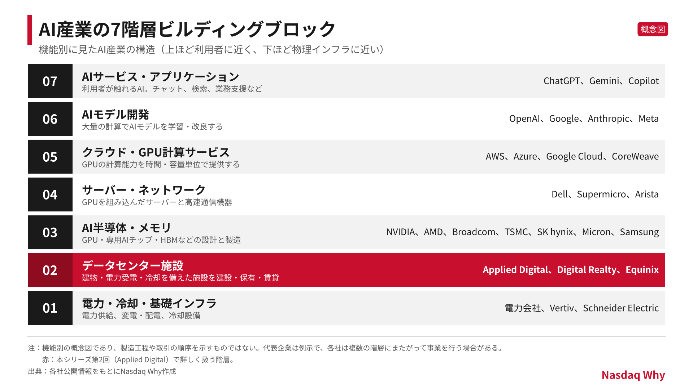
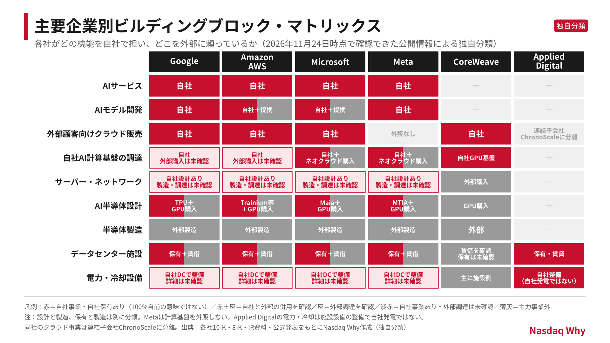
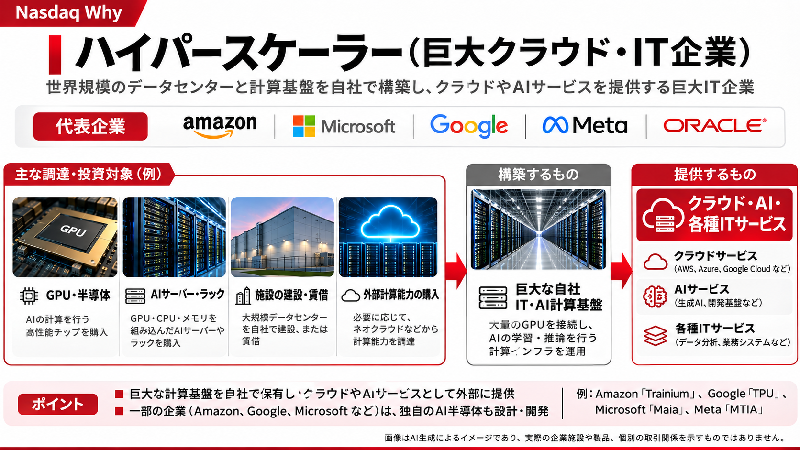
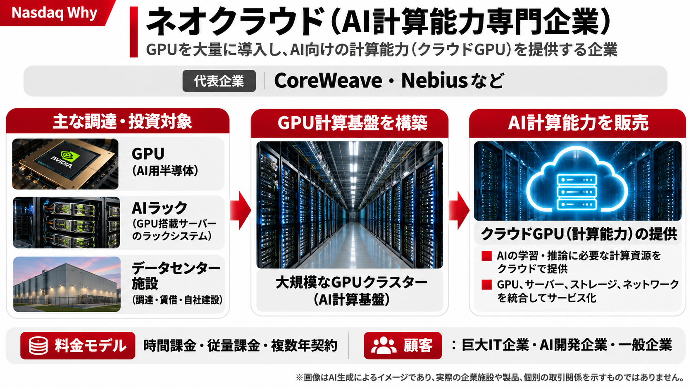
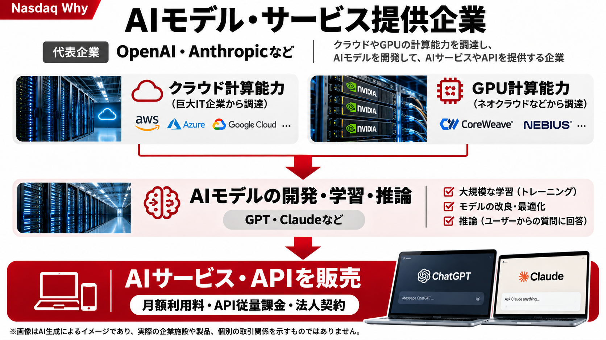
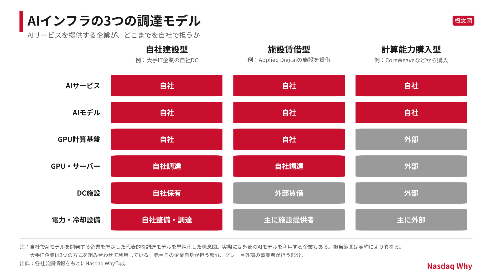
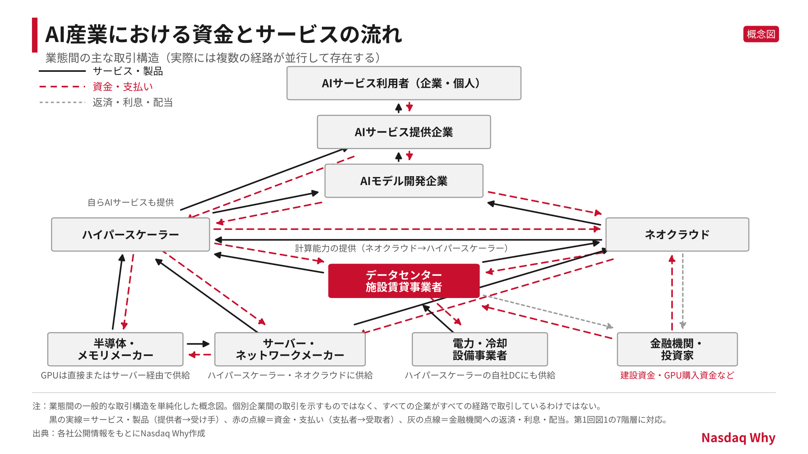
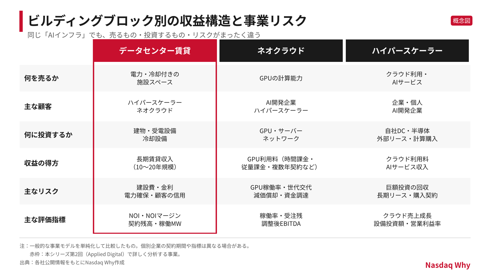

AI産業のビルディングブロック 第1回
AI産業の全体像──誰が何を作り、誰が何に投資し、誰が利益を得るのか？
「AI関連銘柄」と聞くと、多くの人はまずNVIDIAを思い浮かべるだろう。 しかし、ChatGPTやGeminiのようなAIサービスが私たちの手元に届くまでには、半導体だけでなく、サーバー、データセンター、電力、冷却設備、クラウド、そしてそれらを支える資金が必要になる。 しかも、それぞれを担う企業は、売っているものも、投資しているものも、利益の出し方もまったく違う。 新シリーズ「AI産業のビルディングブロック（AI Industry Building Blocks）」では、AI産業を機能別の構成要素（ビルディングブロック）に分解し、誰が何を作り、誰が何に投資し、誰が利益を得るのかを整理していく。 第1回は、その全体像をつかむための地図である。個別企業の詳しい収益性は、第2回以降で掘り下げる。

1．AI産業は7つの階層でできている
AI産業を機能別に分けると、大きく7つの階層に整理できる。
07 AIサービス・アプリケーション
利用者が直接触れるAI。チャット、検索、業務支援など。
例：ChatGPT、Gemini、Copilot
06 AIモデル開発
大量の計算資源を使ってAIモデルを学習・改良する。
例：OpenAI、Google、Anthropic、Meta
05 クラウド・GPU計算サービス
GPUの計算能力を、時間や容量の単位で提供する。
例：AWS、Microsoft Azure、Google Cloud、CoreWeave
04 サーバー・ネットワーク
GPUを組み込んだサーバーや、GPU同士をつなぐ高速通信機器。
例：Dell、Supermicro、Arista
03 AI半導体・メモリ
GPUや専用AIチップ、高帯域幅メモリ（HBM）などの設計と製造。
例：NVIDIA、AMD、Broadcom、TSMC、SK hynix、Micron、Samsung
02 データセンター施設
建物、受電設備、冷却設備を備えた施設を建設・保有し、貸し出す。
例：Applied Digital、Digital Realty、Equinix
01 電力・冷却・基礎インフラ
電力供給、変電・配電、冷却などの設備。
例：電力会社、Vertiv、Schneider Electric
上の階層ほど利用者に近く、下の階層ほど物理的なインフラに近い。
なお、「03 AI半導体・メモリ」の階層には、性質の異なる複数の機能がまとめて含まれている。GPUやAIチップを設計する企業（NVIDIA、AMD、Broadcomなど）、それを製造するファウンドリー（TSMCなど）、HBMなどのメモリを作る企業（SK hynix、Micron、Samsung）、そして複数のチップを高密度に組み合わせる先端パッケージ（先端実装）である。これらの違いは、半導体特集シリーズで詳しく扱っている。
この7階層図は本シリーズ共通の地図として使い、各回で分析する階層を赤色で示していく。
ただし、これは機能別の概念図であり、製造工程や取引の順序を表すものではない。また、大手IT企業の多くは、ひとつの階層にとどまらず、複数の階層にまたがって事業を行っている。
2．同じ「AI企業」でも、担っている階層が違う
図2は、主要6社がそれぞれの階層をどこまで自社で担っているかを整理したものである。

図2では、各マスを次の5つに分けている。
- 赤：自社事業・自社保有あり
- 赤とグレー：自社と外部調達の併用を確認
- グレー：外部調達を確認
- 淡い赤：自社事業はあるが、外部調達の状況は未確認
- 薄いグレー：主力事業外
ここで注意したいのは、「自社」と分類した部分も、100%自前という意味ではないことだ。また「未確認」は、外部調達がないという意味ではなく、今回の調査で公開情報から確認できなかったという意味である。
たとえば、Google、Amazon、Microsoft、Metaはいずれも独自のAIチップを設計している（GoogleのTPU、AmazonのTrainium、MicrosoftのMaia、MetaのMTIA）。しかし、チップの製造そのものは外部の半導体メーカー（ファウンドリー）が担っており、さらに各社ともNVIDIAなどのGPUも購入している。
つまり、「半導体の設計」と「半導体の製造」はまったく別の機能である。
サーバーやネットワーク機器も同じで、大手IT企業が自社で設計していることと、自社の工場で製造していることは別の話である。図2では、製造・調達の方法を確認できなかったものは「未確認」としている。
同じように、「設備を保有すること」と「設備を製造すること」も別である。データセンターを自社で保有していても、受電設備や冷却装置そのものは外部の専門メーカーから購入している。また、Applied Digitalの「電力・冷却設備の自社整備」は、施設の受電・冷却設備を整えることを指し、自社で発電しているという意味ではない。
マトリックスからは、次のような違いが見えてくる。
- 大手IT企業（Google、Amazon、Microsoft、Meta）は、AIサービスから半導体設計、データセンターまで、ほぼすべての階層に関わっている。ただし多くの階層で、自社と外部を組み合わせている。
- ただしMetaは、AWSやAzure、Google Cloudのように計算能力を外部の顧客に販売するクラウド事業は行っていない。Metaの巨大な計算基盤は、自社のAIサービスやAIモデル開発のためのものである。
- CoreWeaveは、GPUの計算能力を販売するクラウド事業に特化しており、GPUは購入し、データセンター施設は主に賃借している。
- Applied Digitalは、データセンター施設の建設・保有・賃貸に特化している。GPUクラウド事業は2026年5月に別の上場会社ChronoScaleとして分離したが、Applied Digitalは分離完了時点で約97%、2026年5月末時点で約96%の株式を保有しており、ChronoScaleは同社の連結子会社である（詳しくは第2回）。
3．ハイパースケーラーとネオクラウドの違い
AIの計算能力を提供する企業は、大きく2種類に分けられる。
ハイパースケーラー
Amazon（AWS）、Microsoft（Azure）、Google（Google Cloud）など、世界規模でクラウドサービスを提供する巨大IT企業。AI向けの計算能力だけでなく、ストレージ、データベース、業務ソフトなど幅広いサービスを提供し、自らもAIサービスを開発・販売している。

なお、この図の代表企業にはMetaも入れているが、Metaは主に自社のサービスのために巨大な計算基盤を運営している。AWSやAzure、Google Cloudのように、計算能力を外部の顧客に販売するクラウド事業は行っていない点で、外販型のクラウド企業とは異なる。
ネオクラウド
CoreWeave、Nebius、Lambdaなど、GPUの計算能力の提供に特化した新興のクラウド事業者。サービスの幅は狭いが、最新GPUを大量に、素早く用意できることを強みとしている。

両者は競合関係であると同時に、取引関係にもある。ハイパースケーラー自身が、自社の設備だけでは足りない計算能力を、ネオクラウドから購入することがあるからだ。
たとえば、CoreWeaveは2025年9月、Metaと最大約142億ドル（2031年12月まで）の計算能力の提供契約を結んだことをSECへの届出（Form 8-K）で開示している。また、Applied Digitalから分離したChronoScaleは、2026年8月27日にMicrosoftとの50MW規模のAI計算基盤の展開計画を発表している（金額や購入規模は非開示）。
なお、Metaのようにネオクラウドから計算能力を購入する場合、それは自社サービス用の計算基盤の調達であり、AWSなどが外部の顧客に計算能力を販売するクラウド事業とは性格が異なる。
そして、ハイパースケーラーやネオクラウドから計算能力を調達し、AIモデルを開発してサービスとして売るのが、OpenAIやAnthropicのようなAIモデル・サービス提供企業である。

これらの企業は、クラウドやGPUの計算能力を調達して、AIモデルの学習や推論を行い、月額の利用料やAPIの従量課金などで収益を得ている。どの企業からどれだけ調達しているかは、公表されていない部分も多い。
4．データセンター賃貸事業者はどこにいるのか
データセンター賃貸事業者は、図1の02の階層にあたる。
彼らが売っているのは、GPUでもクラウドサービスでもない。電力と冷却を備えた「施設」である。

顧客は、ハイパースケーラーやネオクラウドだ。顧客は借りた施設に自社のGPUやサーバーを持ち込み、AIの計算を行う。
この事業の特徴は、10年から20年規模の長期契約が多いことである。GPUは数年で世代交代するが、建物や受電設備はより長く使われる。
そのため、データセンター賃貸事業は、AI産業の中でも不動産やインフラに近い性格を持つ。
第2回では、Applied Digitalの54億ドルの新契約をもとに、この事業がどのくらい儲かるのかを詳しく分析する。
▶ 第2回：AIデータセンターは本当に儲かるのか？──54億ドルの新契約から読み解くApplied Digitalのビジネスモデル
5．自社で持つか、借りるか、買うか
AIサービスを提供する企業が計算能力を確保する方法は、大きく3つある。

自社建設型
データセンターを自ら建設・保有し、GPUやサーバーも自社で調達する。最も自由度が高いが、巨額の初期投資と長い建設期間が必要になる。
施設賃借型
データセンター施設はApplied Digitalのような事業者から借り、その中に自社のGPUやサーバーを入れる。建物への投資を抑えつつ、計算基盤は自社で管理できる。
計算能力購入型
GPUやサーバーも含めて、CoreWeaveのようなネオクラウドから計算能力そのものを購入する。最も早く使い始められるが、自社でコントロールできる範囲は小さくなる。
一口に「AIに投資する」といっても、何を買うかによって中身は大きく違う。
- GPUなどの半導体を購入する：AIの計算を行うチップそのものを買う
- GPU搭載のAIサーバーを購入する：GPU・CPU・メモリなどを組み込んだサーバーを、完成品として買う
- AIラックシステムを購入する：複数のサーバーに、高速ネットワーク・電源・冷却をまとめた、ラック単位の設備を買う
- データセンター施設を建設・賃借する：サーバーを置く建物と、電力・冷却の設備を、自ら建てるか借りる
- 設備を保有せず、AI計算能力を購入する：GPUもサーバーも持たず、計算能力だけをサービスとして買う
どの方法をどれだけ組み合わせているかは企業ごとに異なり、多くは詳しく開示されていない。
大手IT企業は、このうちどれか1つを選んでいるのではなく、3つの方式を組み合わせている。自社のデータセンターを建設しながら、外部の施設を長期で借り、さらにネオクラウドからも計算能力を購入しているのである。
なお、これは自社でAIモデルを開発する企業を想定し、代表的なモデルを単純化したものである。実際には、AIモデルそのものを外部から利用してサービスを提供する企業も多い。担当範囲も個別の契約によって異なる。
6．お金とサービスはどう流れているのか
AI産業では、サービスや製品が流れる方向と、お金が流れる方向が逆になる。

たとえば、
- 利用者はAIサービスに料金を払う。
- AIモデル開発企業は、ハイパースケーラーやネオクラウドに計算能力の利用料を払う。
- ハイパースケーラーも、ネオクラウドから計算能力の提供を受け、その対価を払うことがある。
- ハイパースケーラーやネオクラウドは、データセンター賃貸事業者に賃料を払い、サーバー・ネットワークメーカーや半導体メーカーに機器の代金を払う。GPUは半導体メーカーから直接、またはサーバーメーカーを経由して届く。
- 電力・冷却設備の事業者は、ハイパースケーラーの自社データセンターと、賃貸用のデータセンターの両方に設備を供給する。
- データセンターの建設資金やネオクラウドのGPU購入資金の多くは、金融機関や投資家が供給している。その見返りとして、事業者は返済・利息・配当を支払う。
- ハイパースケーラーは、自らAIサービスを提供すると同時に、AIモデル開発企業やAIサービス提供企業に計算能力を販売する立場でもある。
図4は、個別企業間の取引ではなく、業態の間の一般的な取引構造を示したものである。
実際の取引は一直線のサプライチェーンではなく、複数の経路が並行している。同じ企業が、ある取引では顧客であり、別の取引では供給者になることも珍しくない。
7．何を売り、何に投資し、何がリスクなのか
同じ「AIインフラ」でも、事業によって収益構造とリスクは大きく異なる。

データセンター賃貸事業
売るもの：電力・冷却付きの施設スペース
収益：長期の賃貸収入
主なリスク：建設費の上昇、金利、電力の確保、顧客の信用力
評価指標：NOI（施設純営業収益）、NOIマージン、契約残高
ネオクラウド事業
売るもの：GPUの計算能力
収益：GPUの利用料（時間課金・従量課金・複数年契約など）
主なリスク：GPUの稼働率、GPUの世代交代、減価償却の負担、資金調達
評価指標：稼働率、受注残、調整後EBITDA
ハイパースケーラー
売るもの：クラウドサービス、AIサービス
収益：クラウド利用料、AIサービス収入
主なリスク：巨額投資の回収、長期のリース契約や計算能力の購入契約
評価指標：クラウド売上の成長率、設備投資額、営業利益率
データセンター賃貸事業は、GPUの世代交代の影響を直接受けにくい一方で、建設費や金利の影響を強く受ける。
ネオクラウド事業は、AI需要の拡大の恩恵を受けやすい一方で、GPUの価値が数年で下がるリスクを抱えている。
8．設備投資額（CAPEX）だけでは見えないもの
AI投資の規模を測るとき、大手IT企業の設備投資額（CAPEX）が注目されることが多い。
しかし、これまで見てきたように、大手IT企業はすべての設備を自社で保有しているわけではない。
外部のデータセンター施設を長期で借りる契約や、ネオクラウドから計算能力を購入する契約は、その性質によっては設備投資額とは別に、リース債務や購入契約として計上・開示される。
つまり、設備投資額だけを見ていると、AIに向けられている資金の全体像を過小評価してしまう可能性がある。
AI投資の全体像をつかむには、
- 自社の設備投資額
- データセンター施設の長期リース契約
- ネオクラウドなどからの計算能力の購入契約
の3つを合わせて見る必要がある。
ただし、設備投資額とリース契約、計算能力の購入契約は、会計処理や対象期間が異なるため、単純に合算することはできない。重複計上にも注意が必要である。
ただし、各社のリース契約にはデータセンター以外にオフィスなども含まれており、開示の範囲も会社によって異なる。この点は第4回で詳しく扱う予定である。
9．Nasdaq Whyの視点
AI産業は、「NVIDIAが儲かっている」という一言では説明できない。
半導体、サーバー、データセンター、電力、クラウド、AIモデル、AIサービス。それぞれの階層に異なる企業がいて、異なるものに投資し、異なる時間軸で利益を得ている。
そして大手IT企業でさえ、すべてを自前で持っているわけではない。自社で建設し、外部から借り、外部から買う。その組み合わせ方こそが、AI投資を読み解く鍵になる。
本シリーズでは、今後、各ビルディングブロックを1つずつ取り上げていく。
▶ 次回（第2回）：AIデータセンターは本当に儲かるのか？──54億ドルの新契約から読み解くApplied Digitalのビジネスモデル
シリーズ「AI産業のビルディングブロック」
- 第1回：AI産業の全体像──誰が何を作り、誰が何に投資し、誰が利益を得るのか？（本記事）
- 第2回：AIデータセンターは本当に儲かるのか？──54億ドルの新契約から読み解くApplied Digitalのビジネスモデル
- 第3回：ネオクラウドは本当に儲かるのか？──CoreWeave・Nebius・Lambdaの収益構造（予定）
- 第4回：巨大IT企業はどこまで自前なのか？──自社保有・長期賃貸・計算能力購入の経済学（予定）
- 第5回：AI時代の電力・冷却ビジネス──AIを支える物理インフラ（予定）
- 第6回：AI産業の利益はどこに集中するのか？──資金の流れと利益配分（予定）
- ※第3回以降のタイトル・内容は、今後の調査により変更する場合があります。
- 関連シリーズ：半導体特集（技術・製造工程・サプライチェーンを中心に解説）
情報の確認状況
各社の年次報告書（Form 10-K）、決算資料、公式発表
図1〜図5は、各社の公開情報をもとにNasdaq Whyが作成した概念図・独自分類である。
業態別のイメージ図4枚に使っている設備の写真風の画像はAI生成によるイメージであり、実際の企業施設や製品、個別の取引関係を示すものではない。
図2の分類は、各社が公表している事業内容に基づく定性的な分類であり、自社と外部の比率は各社とも開示していないため示していない。外部調達の状況が確認できなかった項目は「未確認」と表示した（GoogleとAmazonのネオクラウドからの計算能力購入、各社のサーバー調達・電力冷却設備の詳細など）。
大手IT企業のデータセンターの自社保有と賃借の割合、リース契約のうちデータセンター施設が占める金額は、本記事では扱っていない（第4回で扱う予定）。
本記事は公開情報に基づく産業分析を目的としたものであり、特定の金融商品の売買を推奨するものではない。
出典
- ChronoScale Holdings Form 10-Q（2026年8月31日終了四半期, SEC EDGAR）
- ChronoScale Form 8-K（2026年8月27日、Microsoftとの50MW展開計画）
- CoreWeave Form 8-K（2025年9月30日、Metaとの契約）
- Applied Digital Form 8-K（2026年7月27日、ChronoScaleの保有比率約96%・連結）